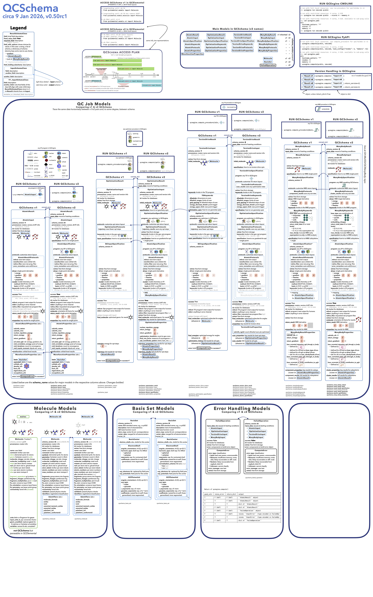

Overview
Python implementations of the MolSSI QCSchema are available within QCElemental. Note that the QCElemental reference implementation here is more up-to-date than the QCSchema repository. These models use Pydantic as their base to provide serialization, validation, and manipulation.
Note
QCSchema v2 is documented here. `Docs for QCSchema v1<https://MolSSI.github.io/QCElemental/v0.30.2/>`_
Basics
Model creation occurs with a kwargs constructor as shown by equivalent operations below:
>>> mol = qcel.models.Molecule(symbols=["He"], geometry=[0, 0, 0])
>>> mol = qcel.models.Molecule(**{"symbols":["He"], "geometry": [0, 0, 0]})
Certain models (Molecule in particular) have additional convenience instantiation functions, like the below for hydroxide ion:
>>> mol = qcel.models.Molecule.from_data("""
-1 1
O 0 0 0
H 0 0 1.2
""")
A list of all available fields can be found by querying for fields:
# QCSchema v1 / Pydantic v1
>>> mol.__fields__.keys()
dict_keys(['symbols', 'geometry', ..., 'id', 'extras'])
# QCSchema v2 / Pydantic v2
>>> mol.model_fields.keys()
dict_keys(['symbols', 'geometry', ..., 'id', 'extras'])
These attributes can be accessed as shown:
>>> mol.symbols
['He']
Note that these models are typically immutable:
>>> mol.symbols = ["Ne"]
TypeError: "Molecule" is immutable and does not support item assignment
To update or alter a model the model_copy command can be used with the update kwargs.
Note that model_copy is Pydantic v2 syntax, but it will work on QCSchema v1 and v2 models.
The older Pydantic v1 syntax, copy, will only work on QCSchema v1 models.
>>> mol.model_copy(update={"symbols": ["Ne"]})
< Geometry (in Angstrom), charge = 0.0, multiplicity = 1:
Center X Y Z
------------ ----------------- ----------------- -----------------
Ne 0.000000000000 0.000000000000 0.000000000000
>
Serialization
All models can be serialized back to their dictionary counterparts through the model_dump function:
Note that model_dump is Pydantic v2 syntax, but it will work on QCSchema v1 and v2 models.
The older Pydantic v1 syntax, dict, will only work on QCSchema v1 models. It has a different effect on v2 models.
>>> mol.model_dump()
{'symbols': ['He'], 'geometry': array([[0., 0., 0.]])}
JSON representations are supported out of the box for all models:
Note that model_dump_json is Pydantic v2 syntax, but it will work on QCSchema v1 and v2 models.
The older Pydantic v1 syntax, json, will only work on QCSchema v1 models.
>>> mol.model_dump_json()
'{"symbols": ["He"], "geometry": [0.0, 0.0, 0.0]}'
Raw JSON can also be parsed back into a model:
>>> mol.parse_raw(mol.model_dump_json())
< Geometry (in Angstrom), charge = 0.0, multiplicity = 1:
Center X Y Z
------------ ----------------- ----------------- -----------------
He 0.000000000000 0.000000000000 0.000000000000
>
The standard dict operation returns all internal representations which may be classes or other complex structures.
To return a JSON-like dictionary the model_dump function can be used:
>>> mol.model_dump(encoding='json')
{'symbols': ['He'], 'geometry': [0.0, 0.0, 0.0]}
QCSchema v2
Starting with QCElemental v0.50.0, a new “v2” version of QCSchema is accessible. In particular:
QCSchema v2 is written in Pydantic v2 syntax. (Note that a model with submodels may not mix Pydantic v1 and v2 models.)
Major QCSchema v2 models have field
schema_version=2. Note that Molecule has long hadschema_version=2, but this belongs to QCSchema v1. The QCSchema v2 Molecule hasschema_version=3.QCSchema v2 has certain field rearrangements that make procedure models more composable. They also make v1 and v2 distinguishable in dictionary form.
QCSchema v2 does not include new features. It is purely a technical upgrade.
Also see https://github.com/MolSSI/QCElemental/issues/323 for details and progress. The Changelog and a Migration Guide contain details.
{kind=link}

Migration guide in visual form.
The anticipated timeline is:
v0.50 — QCSchema v2 available. QCSchema v1 unchanged (files moved but imports will work w/o change). There will be prereleases. This has been accelerated by the need for v2 for Python 3.14+ compatibility. Schema layout to be finalized by v0.60
v0.60 — QCSchema v2 layout finalized.
v0.70 — QCSchema v2 will become the default. QCSchema v1 will remain available, but it will require specific import paths (available as soon as v0.50).
v1.0 — QCSchema v2 unchanged. QCSchema v1 dropped. Earliest 1 Jan 2027.
Both QCSchema v1 and v2 will be available for quite a while to allow downstream projects time to adjust.
To make sure you’re using QCSchema v1:
# replace
>>> from qcelemental.models import AtomicResult, OptimizationInput
# by
>>> from qcelemental.models.v1 import AtomicResult, OptimizationInput
To try out QCSchema v2:
# replace
>>> from qcelemental.models import AtomicResult, OptimizationInput
# by
>>> from qcelemental.models.v2 import AtomicResult, OptimizationInput
To figure out what model you’re working with, you can look at its Pydantic base or its QCElemental base:
# make molecules
>>> mol1 = qcel.models.v1.Molecule(symbols=["O", "H"], molecular_charge=-1, geometry=[0, 0, 0, 0, 0, 1.2])
>>> mol2 = qcel.models.v2.Molecule(symbols=["O", "H"], molecular_charge=-1, geometry=[0, 0, 0, 0, 0, 1.2])
>>> print(mol1, mol2)
Molecule(name='HO', formula='HO', hash='6b7a42f') Molecule(name='HO', formula='HO', hash='6b7a42f')
# query v1 molecule
>>> isinstance(mol1, pydantic.v1.BaseModel)
True
>>> isinstance(mol1, pydantic.BaseModel)
False
>>> isinstance(mol1, qcel.models.v1.ProtoModel)
True
>>> isinstance(mol1, qcel.models.v2.ProtoModel)
False
# query v2 molecule
>>> isinstance(mol2, pydantic.v1.BaseModel)
False
>>> isinstance(mol2, pydantic.BaseModel)
True
>>> isinstance(mol2, qcel.models.v1.ProtoModel)
False
>>> isinstance(mol2, qcel.models.v2.ProtoModel)
True
Most high-level models (e.g., AtomicInput, not Provenance) have a convert_v function to convert between QCSchema versions. It returns the input object if called with the current version.
>>> inp1 = qcel.models.v1.AtomicInput(driver='energy', model={'method': 'pbe', 'basis': 'pvdz'}, molecule=mol1)
>>> print(inp1)
AtomicInput(driver='energy', model={'method': 'pbe', 'basis': 'pvdz'}, molecule_hash='6b7a42f')
>>> inp1.schema_version
1
>>> inp2 = qcel.models.v2.AtomicInput(driver='energy', model={'method': 'pbe', 'basis': 'pvdz'}, molecule=mol2)
>>> print(inp2)
AtomicInput(driver='energy', model={'method': 'pbe', 'basis': 'pvdz'}, molecule_hash='6b7a42f')
>>> inp2.schema_version
2
# now convert
>>> inp1_now2 = inp1.convert_v(2)
>>> print(inp1_now2.schema_version)
2
>>> inp2_now1 = inp1.convert_v(1)
>>> print(inp2_now1.schema_version)
1
Error messages aren’t necessarily helpful in the upgrade process.
# This usually means you're calling Pydantic v1 functions (dict, json, copy) on a Pydantic v2 model.
# There are dict and copy functions commented out in qcelemental/models/v2/basemodels.py that you
# can uncomment and use temporarily to ease the upgrade, but the preferred route is to switch to
# model_dump, model_dump_json, model_copy that work on QCSchema v1 and v2 models.
>>> TypeError: ProtoModel.serialize() got an unexpected keyword argument 'by_alias'
# This usually means you're mixing a v1 model into a v2 model. Check all the imports from
# qcelemental.models for version specificity. If the import can't be updated, run `convert_v`
# on the model.
>>> pydantic_core._pydantic_core.ValidationError: 1 validation error for AtomicInput
>>> molecule
>>> Input should be a valid dictionary or instance of Molecule [type=model_type, input_value=Molecule(name='HO', formula='HO', hash='6b7a42f'), input_type=Molecule]
>>> For further information visit https://errors.pydantic.dev/2.5/v/model_type